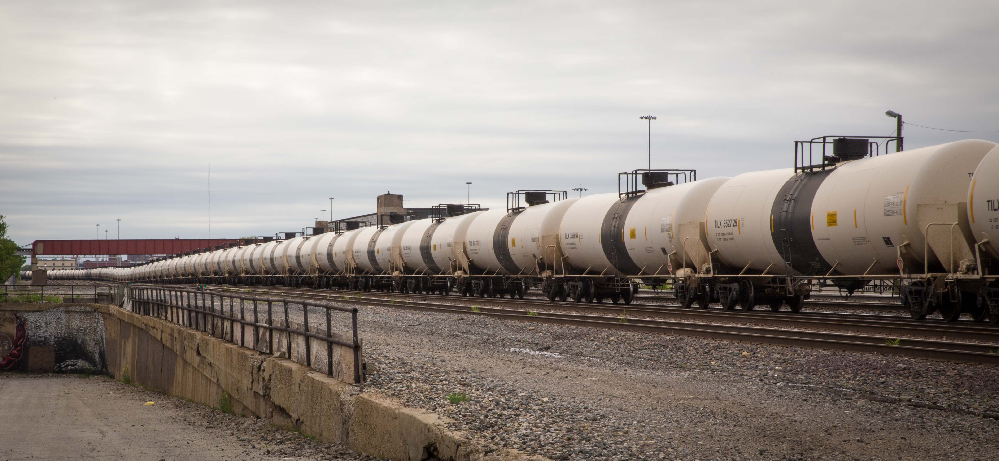

Reported and Written by Ezra Kaplan | Produced by Alysha Khan
5 crude oil derailments in 2013.
10 derailments in 2014
4 derailments within one month in 2015.
At this rate, the U.S. is on track to have the worst year ever for derailments involving oil-carrying trains.
About 40 crude oil filled trains, each a mile-long, roll through Chicago every week, according to documents obtained from the Illinois Emergency Management Agency. That’s about 17 million gallons - or 400 thousand barrels of Bakken crude - flowing through the city each day.
Earlier this spring, one of those trains derailed and exploded into flames on the outskirts of Galena, Illinois, a historic lead-mining town turned tourist haven that is only a 3-hour drive from downtown Chicago.
A Burlington Northern Santa Fe, BNSF, train carrying about 3 million gallons of oil derailed March 5. Five of the cars ruptured, resulting in a fire so strong that local firefighters said that they were forced to back down and let the fire burn.
“It sounded like a jet engine,” said John Schultz who watched from his farm near Galena as a “big billowing black cloud of smoke” rose from the crash site just three-quarters of a mile away.
Footage from the March 5 derailment in Galena, Illinois. Though the derailment was very near the Mississippi river, no oil has been detected in the water. (WQAD News 8/Courtesy)
That train, carrying extra volatile crude oil from the Bakken region of North Dakota, was headed for East Coast refineries. Along its path stood Chicago’s South Side.
The Galena derailment and ensuing oil fire was the result of a wheel malfunction, according to Senator Dick Durbin, the Illinois Democrat, according to various media outlets.
The accident was not site specific, nor was it a problem with the rails. It was a problem with the train itself.
Pure luck brought the derailment to the outskirts of a rural Illinois town, population 3,300, rather than the city of Chicago, population 2.7 million. With such a huge volume of Bakken crude oil rolling now through the city each week, the stakes are high.
Crude oil, unlike many of its hazardous freight predecessors, is often shipped in huge quantities that take up entire trains, known as unit trains. These unit trains, often over a mile long, link together between 70 and 120 tank cars.
The exact route of these trains, though not released for security reasons, is fairly predictable from publicly available resources.
By combining official documents and maps representing the work of train spotters - compiled by ForestEthics, a grassroots environmental organization - it is clear that the majority of the oil-laden trains enter the state in the very northwestern corner near Galena. They travel southeast across the state to Aurora and then cut north through Naperville, Downer’s Grove, La Grange, Cicero and the South Side near Cermak.
"Our rail system is designed to connect population centers, not avoid them. That's why these trains travel right through the heart of Chicago,” said Eddie Scher with ForestEthics.
“No fire department can fight the blaze from even a single 30,000 gallon tank car, and we're talking about trains with 100-plus cars,” said Scher. “Every step toward safety is a step in the right direction, but what we need is a ban on crude oil moving through American cities and towns on trains."
The U.S. is in the middle of an oil boom. Production in 2014 increased 16 percent, the largest increase by volume in U.S. history, according to the Energy Information Administration. This spike in production is largely due to fracking nationwide. As of February, domestic oil is being produced at a rate of over 9.2 million barrels per day, the highest ever, the agency said.
The U.S. is in the middle of an oil boom. Production in 2014 increased 16 percent, the largest increase by volume in U.S. history, according to the Energy Information Administration. (Source: U.S. Energy Information Administration)
Much of that oil is extracted by hydraulic fracking in the Bakken oil fields, which spread across North Dakota, Montana and Saskatchewan, Canada. The oil, locked in bedrock, was considered unreachable not so long ago. But fracking releases the black gold by breaking open seams in the bedrock as pumps send a high-pressure cocktail of water and chemicals deep into the ground. Since the first successful major fracking operation by Brigham Oil & Gas in 2009, production in the region has expanded ten-fold.
From the Bakken region, the crude oil is either pumped through pipelines or, as is becoming more common, loaded into tank cars and shipped via rail to either the Gulf Coast, the East Coast or the West Coast.
Between 2008 and 2014 the number of carloads of crude oil in the United States jumped from just under 10,000 carloads a year to nearly half a million according to the Association of American Railroads.
While the amount of crude oil traversing the tracks of the nation has climbed steadily, the destination of the trains has shifted dramatically.
While the amount of crude oil traversing the tracks of the nation has climbed steadily, the destination of the trains has shifted dramatically (Source: U.S. Energy Information Administration)
From 2010 to 2013 the overwhelming majority of the crude went south, to the Gulf.
Then in 2014, the East Coast began favoring domestic oil over foreign imports based on the growing price disparity between the two sources.
“New York used to import their oil,” said Phil Flynn, an analyst at PRICE Futures Group. “Now they get their oil from the Bakken region.”
Domestic crude oil, transported by rail, overtook imported crude to make up the majority of the supply to East Coast refiners for the first time in February 2015 according to the U.S. Energy Information Administration.
Flynn said this flow of oil by rail from the middle of the country to the East Coast is likely to remain steady for the next several years. He added that if the Keystone XL Pipeline were ever approved, it would result in another increase in the number of oil filled tank cars rambling across the country—right through Chicago’s South Side.
The history of problems with tank cars goes back to the 1970s when a rash of deadly tank car accidents hit the nation. As Americans watched images of tank cars spilling tons of chemicals like nitric acid and chlorine gas on the nightly news, there were calls for reform.
There are two different types of tank cars, pressurized and non-pressurized. The difference in the construction consists of pressure plates being added to each opening in the pressurized cars. These specially designed cars are used to carry commodities such as liquified petroleum gas (LPG), various acids and liquified gasses. Non-pressurized tank cars have significantly fewer reinforcements and have not seen drastic changes in regulations at the same rate that their pressurized counterparts have, until now. These are used to haul food oils, corn syrup, ethanol and crude oil along with various other commodities.
The calls were answered, and by the early 1980s, pressurized tank cars were retrofitted with reinforced metal shields at the front and back of the tank car to prevent punctures. Additionally the tanks were outfitted with new, fire-resistant thermal insulation.
The safety measures worked and an industry report found that punctures and ruptures of the tank bodies of pressurized cars fell dramatically by 1986.
However, non-pressurized cars were left unaltered. At the time, there was no need for concern. Most of these non-pressurized cars were carrying corn syrup, vegetable oils and other non-volatile commodities. But many still transported hazardous materials such as ethanol.
The National Transportation Safety Board has been writing letters to the Federal Railroad Administration for more that 30 years urging action as accident after accident made the nightly news. “The inadequacy of the protection provided by DOT-111A tank cars for certain dangerous products has been evident for many years,” wrote the NTSB in 1991
Yet, the NTSB is an investigative safety board which “has no regulatory or enforcement powers,” according to its website. Consequently its pleas seem to have fallen on deaf ears.
The DOT-111 is a non-pressurized rail tank car in operation throughout the U.S. The same car is used in Canada but it is called the CTC-111A. It was originally designed in the 1960’s to haul corn syrup and other non-hazardous materials. Today there are approximately 270,000 DOT-111s in the North American fleet. Of those, 63 percent handle hazardous materials.
Following a deadly ethanol accident in 2009, the Association of American Railroads revised their recommendations for tank car construction resulting in a new class of tank cars referred to as CPC-1232. Though the new standards were meant to make the tank cars safer, the fiery derailments this year have involved both DOT-111 and CPC-1232 tank cars.
Tank cars constructed under the new guidelines put out by PHMSA and FRA will be designated as DOT-117.
The combination of the unchanged, under equipped tank cars and these massive unit trains led to several major derailments including a 2009 ethanol derailment in Cherry Valley, Illinois, near Rockford. The accident killed one man who was waiting at the train crossing and injured nine others, including two firefighters.
Today these unit trains are rambling across the country carrying crude oil from the Bakken region at ever-higher rates. And even though the railroad industry often touts the Association of American Railroad statistic that 99.9 percent of all rail freight arrives at its destination safely, the disasters are getting scarier.
One of the worst North American oil by rail disasters happened on July 6, 2013, in the town of Lac-Mégantic, Quebec. The derailment killed 47 people and destroyed half of the downtown area.
Though none have been deadly as Lac-Mégantic, this year has seen a dramatic increase in the frequency of the accidents.
Now, as in the 1970s, new voices are joining the call for change and reform.
“Recent derailments have made it clear that at a very basic level we need to better secure flammable substances travelling in unsafe tank cars,” said Durbin in a statement March 25. “We need to set an ambitious, yet realistic timeline for the upgrades that will deliver a safer generation of tank cars. We also need to look closely at the volatility of the contents of these tank cars, giving us the opportunity to put the most volatile, dangerous cargo in the safest cars.”
Earlier this month the Obama administration seemingly heeded these calls as the Department of Transportation announced new rules May 1 for “the safe transportation of flammable liquids by rail.” The new rules set the minimum standards that shippers have to meet.
“Railroads have a common carrier obligation to transport hazardous materials and cannot refuse to provide this service,” testified Clifford Eby, deputy federal railroad administrator in 2008.
In this regard, the railroad’s hands are tied said Zak Andersen. “The shipper just has to have equipment that is compliant with the federal standards,” he said. “We don’t have any choice even though we know that risk could be reduced further with a stronger car.”
"Recent derailments have made it clear that at a very basic level we need to better secure flammable substances travelling in unsafe tank cars" - Senator Dick Durbin, IL-D.
Over 20 years after the NTSB started raising concern about the safety of these ill-equipped tank cars the DOT proposed a new set of rules to regulate the tank cars:
Tank Cars: Under the rule new tank cars will have to be made to higher safety standards to prevent rupturing in the event of a derailment. This includes thicker metal used for the tank shell, additional thermal protection and enhanced pressure relief valves. The 154,500 tank cars already carrying flammables will need to be retrofitted or taken out of service. The older DOT-111 cars have a three-year timeline (Deadline: March 1, 2018) and the newer CPC-1232 tank cars will be set on five-year timeline for retrofitting (Deadline: April 1, 2020).
Enhanced brakes: Trains meeting the definition of a “High-hazard flammable unit train,” or HHFTs, will be required to have electronically controlled pneumatic brakes installed by 2021. The purpose of the brakes, according to the DOT, is to mitigate damage in derailments by “potentially reducing the severity of an accident, and the ‘pile-up effect.’”
New operational protocols: Trains that are considered HHFTs will be restricted to a 50 mph speed limit nationwide. If the train has any tank cars that are not new or retrofitted, the speed will be restricted to 40 mph.
Improved information sharing: Railroads will be required to maintain a point of contact for local fusion centers regarding routing of hazardous materials through their jurisdiction. Though it must be noted that this information is not available to the public.
“We are pleased that the regulation does make some requirements on the new tank car,” said Carl Ice, CEO of BNSF, who spoke recently at the National Association of Rail Shippers conference held in downtown Chicago. “But if I didn’t mention [electronically controlled pneumatic brakes] I would be doing a disservice to everyone. We are really concerned about that.”
He went on to describe the electronically controlled pneumatic brake systems as unproven and a potential burden by reducing the carrying capacity of the rail system.
“It will require our guys to spend more time between the cars,” Ice said. “And that is where the most injuries occur.”
The requirements around thermal protection seem to have everyone confused.
“I’d like to see it have our proposed thermal protection, which would have a longer period of time for the emergency responders to get in there and for the railroad to perhaps decouple those cars that are still upright and get them out of the way,” said Ed Hamberger, president and CEO of the Association of American Railroads.
“We called for a standard of 800 minutes and the petroleum industry did too. For some reason the rule has 100 minutes in it which we don’t think is sufficient,” said Zak Andersen, Vice President of corporate communications at BNSF. “To be honest we are puzzled by it because both the shipper and the railroad were saying that’s a good idea.”
Already, at least four different lawsuits against the new rules have been filed in circuit courts across the country, including one jointly filed by the cities of Aurora and Barrington, Illinois.
That lawsuit targets the length the phase-out schedule for structurally deficient cars, which Aurora Mayor Tom Weisner said is far too long.
And the data backs him up.
A government report put out last July by PHMSA predicted that with no changes there will be an average of 14 critical derailments of oil trains per year nationwide over the next three years – the same three years that oil companies have to retrofit the tank cars.
"No fire department can fight the blaze from even a single 30,000 gallon tank car, and we're talking about trains with 100-plus cars" - Eddie Scher with ForestEthics.
Additionally the lawsuit asks for a potential loophole regarding which tank cars will be effect to be removed. The new rules would only apply to unit trains and would allow trains to have up to 35 older, non retrofitted, tank cars.
The CEO of the Association of American Railroads agrees. “I would like to see it be a car rule rather than a train rule,” said Hamberger
Meanwhile cleanups continue in Galena and around the country.
Some, such as the activists with ForestEthics argue it might be time to rethink crude by rail entirely.
"We must do everything we can to protect people in the blast zone from the threat of oil trains derailing, spilling and exploding,” said Scher. “Thermal jackets, advanced brakes, disclosure of routes and cargo to emergency responders, slower speeds, more engineers will help prevent accidents. But, ultimately, there is no safe way to transport crude oil by train.”
Ed Greenberg with the Association of American Railroads responded to Scher’s statement saying in a statement, “The freight rail industry shares the concern regarding the safer movement of crude oil by rail and knows there is no greater priority than safety, it is a 24-7 focus of all railroads in this country... The goal of the nation’s freight railroads remains zero accidents and we will continue to work hard at preventing any incident.”